Ежедневная работа с Git / Хабрахабр
58-83 минуты
Я совсем не долго изучаю и использую git практически везде, где только можно. Однако, за это время я успел многому научиться и хочу поделиться своим опытом с сообществом.
Я постараюсь донести основные идеи, показать как эта VCS помогает разрабатывать проект. Надеюсь, что после прочтения вы сможете ответить на вопросы:
Конечно, я попытаюсь рассказать обо всём по-порядку, начиная с основ. Поэтому, эта статья будет крайне полезна тем, кто только начинает или хочет разобраться с git. Более опытные читатели, возможно, найдут для себя что-то новое, укажут на ошибки или поделятся советом.
Вместо плана
Очень часто, для того чтобы с чем-то начать я изучаю целую кучу материалов, а это — разные люди, разные компании, разные подходы. Всё это требует много времени на анализ и на понимание того, подойдёт ли что-нибудь мне? Позже, когда приходит понимание, что универсальное решение отсутствует, появляются совершенно другие требования к системе контроля версий и к разработке.
Итак, выделю основные шаги:
Окружение
Для работы нам нужно:
На текущим момент моё окружение это Debian + KDE + Git + Bash + GitK + KDiff3.
Если вы обнаружили на своём компьютере Windows, то у вас скорее всего будет Windows + msysgit (git-bash) + TortoiseGit и т.д.
Если вы открываете консоль, пишите git и получаете вот это:
справка git
usage: git [--version] [--exec-path[=<path>]] [--html-path] [--man-path] [--info-path]
[-p|--paginate|--no-pager] [--no-replace-objects] [--bare]
[--git-dir=<path>] [--work-tree=<path>] [--namespace=<name>]
[-c name=value] [--help]
<command> [<args>]
The most commonly used git commands are:
add Add file contents to the index
bisect Find by binary search the change that introduced a bug
branch List, create, or delete branches
checkout Checkout a branch or paths to the working tree
clone Clone a repository into a new directory
commit Record changes to the repository
diff Show changes between commits, commit and working tree, etc
fetch Download objects and refs from another repository
grep Print lines matching a pattern
init Create an empty git repository or reinitialize an existing one
log Show commit logs
merge Join two or more development histories together
mv Move or rename a file, a directory, or a symlink
pull Fetch from and merge with another repository or a local branch
push Update remote refs along with associated objects
rebase Forward-port local commits to the updated upstream head
reset Reset current HEAD to the specified state
rm Remove files from the working tree and from the index
show Show various types of objects
status Show the working tree status
tag Create, list, delete or verify a tag object signed with GPG
See 'git help <command>' for more information on a specific command.
Значит вы готовы.
Перестаём бояться экспериментировать
Наверняка, большинство команд уже где-то подсмотрено, какие-то статьи прочитаны, вы хотите приступить но боитесь ввести не ту команду или что-то поломать. А может ещё ничего и не изучено. Тогда просто помните вот это:
Вы можете делать всё что угодно, выполнять любые команды, ставить эксперименты, удалять, менять. Главное не делайте git push.
Только эта команда передаёт изменения в другой репозиторий. Только так можно что-то сломать.
Строго говоря, даже неудачный git push можно исправить.
Поэтому, спокойно можете клонировать любой репозиторий и начать изучение.
Строим репозитории
В первую очередь нужно понять что такое git-репозиторий? Ответ очень прост: это набор файлов. Папка `.git`. Важно понимать, что это только набор файлов и ничего больше. Раз 20 наблюдал проблему у коллег с авторизацией в github/gitlab. Думая, что это часть git-системы, они пытались искать проблему в конфигруации git, вызывать какие-то git-команды.
А если это просто файлы, то к ним нужно как-то получить доступ, иметь возможность оттуда читать и туда писать? Да! Я называю это «транспортом». Это может и некорректно, но мне так было удобно запомнить. Более правильный вариант: «Протокол передачи данных». Самые распространённые варианты:
Вариантов намного больше. Не важно какой транспорт будет использован, важно чтобы был доступ на чтение или чтение/запись к файлам.
Поэтому, если вы никак не можете клонировать репозиторий с github, и нет в логах никаких подсказок, возможно у вас проблема с транспортом.
В частности, при клонировании вот так:
git clone git@github.com:user/repo.git
урл «превращается» в
git clone ssh://git@github.com:user/repo.git
Т.е. используется SSH и проблемы нужно искать в нём. Как правило, это неправильно настроенный или не найденный ssh-ключ. Гуглить надо в сторону «SSH Auth Key git» или, если совсем по взрослому, проверить, что же происходит:
ssh -vvv git@github.com
Какие протоколы поддерживаются поможет справка (раздел GIT URLS):
git clone --help
Репозиторий можно клонировать, но для начала поиграемся со своими:
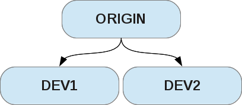
Кроме самого репозитория есть ещё и workspace, где хранятся файлы с которыми вы работаете. Именно в этой папке лежит сам репозиторий (папка .git ). На серверах рабочие файлы не нужны, поэтому там хранятся только голые репозитории (bare-repo).
Сделаем себе один (будет нашим главным тестовым репозиторием):
$ mkdir git-habr
$ cd git-habr
$ git init --bare origin
Initialized empty Git repository in /home/sirex/proj/git-habr/origin/
Теперь клонируем его от имени разработчиков. Тут есть только один нюанс, которого не будет при работе с сервером: git, понимая, что репозитории локальные и находятся на одном разделе, будет создавать ссылки, а не делать полную копию. А нам для изучения нужна полная копия. Для этого можно воспользоваться ключом --no-hardlinks или явно указать протокол:
$ git clone --no-hardlinks origin dev1
Cloning into 'dev1'...
warning: You appear to have cloned an empty repository.
done.
$ git clone --no-hardlinks origin dev2
Cloning into 'dev2'...
warning: You appear to have cloned an empty repository.
done.
Итог: у нас есть 3 репозитория. Там ничего нет, зато они готовы к работе.
Начало GIT
Скандалы! Интриги! Расследования!
Можно дальше продолжить список, но и этого уже достаточно, чтобы задать вполне закономерные вопросы:
Как это всё работает?
Как это всё можно понять и запомнить?
Для этого нужно заглянуть под капот. Рассмотрим всё в общих чертах.
Git. Почти под капотом
Git сохраняет в commit содержимое всех файлов (делает слепки содержимого каждого файла и сохраняет в objects). Если файл не менялся, то будет использован старый object. Таким образом, в commit в виде новых объектов попадут только
изменённые файлы
, что позволит хорошо экономить место на диске и даст возможность быстро переключиться на любой commit.
Это позволяет понять, почему работают вот такие вот забавные штуки:
$ git init /tmp/test
Initialized empty Git repository in /tmp/test/.git/
$ cd /tmp/test
$ cp ~/debian.iso .
$ du -sh .git
92K .git
$ git add debian.iso
$ git commit -m "Added iso"
[master (root-commit) 0fcc821] added iso
1 file changed, 0 insertions(+), 0 deletions(-)
create mode 100644 debian.iso
$ du -sh .git
163M .git
$ cp debian.iso debian2.iso
$ cp debian.iso debian3.iso
$ git add debian2.iso debian3.iso
$ git commit -m "Copied iso"
[master f700ab5] copied iso
2 files changed, 0 insertions(+), 0 deletions(-)
create mode 100644 debian2.iso
create mode 100644 debian3.iso
$ du -sh .git
163M .git
Да, не стоит хранить «тяжёлые» файлы, бинарники и прочее без явной необходимости. Они там останутся навсегда и будут в каждом клоне репозитория.
Каждый коммит может имеет несколько коммитов-предков и несколько дочерних-коммитов:
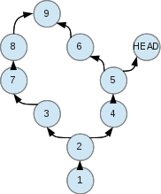
Мы можем переходить (восстанавливать любое состояние) в любую точку этого дерева, а точнее, графа. Для этого используется git checkout:
git checkout <commit>
Каждое слияние двух и более коммитов в один — это merge (объединение двух и более наборов изменений).
Каждое разветвление — это появление нескольких вариантов изменений.
Кстати, тут хочется отметить, что нельзя сделать тэг на файл/папку, на часть проекта и т.д. Состояние восстанавливается только целиком. Поэтому, рекомендуется держать проекты в отдельном репозитории, а не складывать Project1, Project2 и т.д. просто в корень.
Теперь к веткам. Выше я написал:
В Git нет веток* (с небольшой оговоркой)
Получается, что так и есть: у нас есть много коммитов, которые образуют граф. Выбираем любой путь от parent-commit к любому child-commit и получаем состояние проекта на этот коммит. Чтобы коммит «запомнить» можно создать на него именованный указатель.
Такой именованный указатель и есть ветка (branch). Так же и с тэгом (tag). `HEAD` работает по такому же принципу — показывает, где мы есть сейчас. Новые коммиты являются продолжением текущей ветки (туда же куда и смотрит HEAD).
Указатели можно свободно перемещать на любой коммит, если это не tag. Tag для того и сделан, чтобы раз и навсегда запомнить коммит и никуда не двигаться. Но его можно удалить.
Вот, пожалуй, и всё, что нужно знать из теории на первое время при работе с git. Остальные вещи должны показаться теперь более понятными.
Терминология
index
— область зафиксированных изменений, т.е. всё то, что вы подготовили к сохранению в репозиторий.
commit
— изменения, отправленные в репозиторий.
HEAD
— указатель на commit, в котором мы находимся.
master
— имя ветки по-умолчанию, это тоже указатель на определённый коммит
origin
— имя удалённого репозитория по умолчанию (можно дать другое)
checkout
— взять из репозитория какое-либо его состояние.
Простые правки
Есть две вещи которые должны быть у вас под рукой всегда:
Если вы сделали что-то не так, запутались, не знаете, что происходит — эти две команды вам помогут.
git status — показывает состояние вашего репозитория (рабочей копии) и где вы находитесь.
gitk
— графическая утилита, которая показывает наш граф. В качестве ключей передаём имена веток или
--all
, чтобы показать все.
Вернёмся к нашим репозиториям, которые создали раньше. Далее обозначу, что один разработчик работает в dev1$, а второй в dev2$.
Добавим README.md:
dev1$ vim README.md
dev1$ git add README.md
dev1$ git commit -m "Init Project"
[master (root-commit) e30cde5] Init Project
1 file changed, 4 insertions(+)
create mode 100644 README.md
dev1$ git status
nothing to commit (working directory clean)
Поделимся со всеми. Но поскольку мы клонировали пустой репозиторий, то git по умолчанию не знает в какое место добавить коммит.
Он нам это подскажет:
dev1$ git push origin
No refs in common and none specified; doing nothing.
Perhaps you should specify a branch such as 'master'.
fatal: The remote end hung up unexpectedly
error: failed to push some refs to '/home/sirex/proj/git-habr/origin'
dev1$ git push origin master
Counting objects: 3, done.
Writing objects: 100% (3/3), 239 bytes, done.
Total 3 (delta 0), reused 0 (delta 0)
Unpacking objects: 100% (3/3), done.
To /home/sirex/proj/git-habr/origin
* [new branch] master -> master
Второй разработчик может получить эти изменения, сделав pull:
dev2$ git pull
remote: Counting objects: 3, done.
remote: Total 3 (delta 0), reused 0 (delta 0)
Unpacking objects: 100% (3/3), done.
From /home/sirex/proj/git-habr/origin
* [new branch] master -> origin/master
Добавим ещё пару изменений:
dev1(master)$ vim README.md
dev1(master)$ git commit -m "Change 1" -a
dev1(master)$ vim README.md
dev1(master)$ git commit -m "Change 2" -a
dev1(master)$ vim README.md
dev1(master)$ git commit -m "Change 3" -a
Посмотрим, что же мы сделали (запускаем gitk):
Скрытый текст
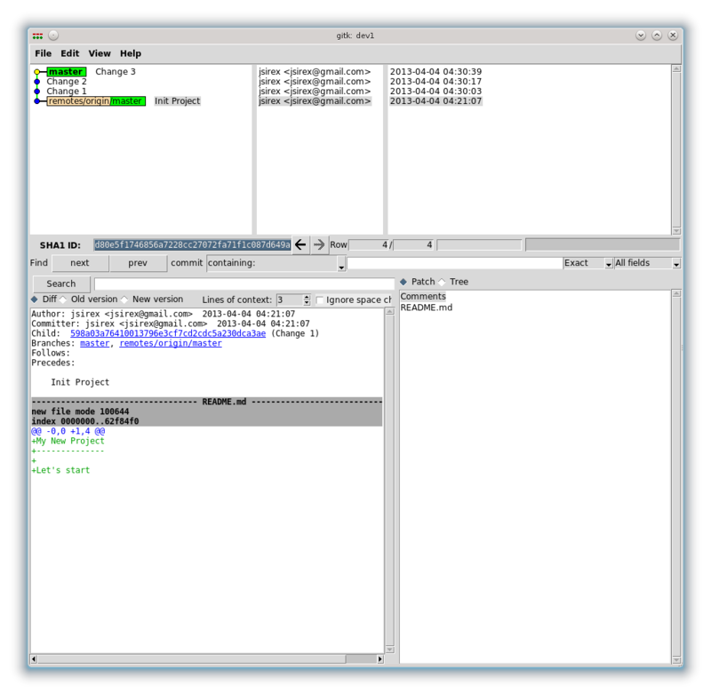
Выделил первый коммит. Переходя по-порядку, снизу вверх, мы можем посмотреть как изменялся репозиторий:
@@ -2,3 +2,4 @@ My New Project
--------------
Let's start
+Some changes
@@ -3,3 +3,5 @@ My New Project
Let's start
Some changes
+Some change 2
+
@@ -2,6 +2,5 @@ My New Project
--------------
Let's start
-Some changes
-Some change 2
+Some change 3
До сих пор мы добавляли коммиты в конец (там где master). Но мы можем добавить ещё один вариант README.md. Причём делать мы это можем из любой точки. Вот, например, последний коммит нам не нравится и мы пробуем другой вариант. Создадим в предыдущей точке указатель-ветку. Для этого через git log или gitk узнаем commit id. Затем, создадим ветку и переключимся на неё:
dev1(master)$ git branch <branch_name> <commit_id>
dev1(master)$ git checkout <branch_name>
Для тех, кто любит GUI есть вариант ещё проще: выбрать нужный коммит правой кнопкой мыши -> «create new branch».
Если кликнуть по появившейся ветке, там будет пункт «check out this branch». Я назвал ветку «v2».
Сделаем наши тестовые изменения:
dev1(v2)$ vim README.md
dev1(v2)$ git commit -m "Ugly changes" -a
[v2 75607a1] Ugly changes
1 file changed, 1 insertion(+), 1 deletion(-)
Выглядит это так:
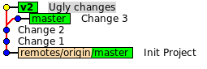
Теперь нам понятно, как создаются ветки из любой точки и как изменяется их история.
Быстрая перемотка
Наверняка, вы уже встречали слова
fast-forward
,
rebase
,
merge
вместе. Настало время разобраться с этими понятиями. Я использую rebase, кто-то только merge. Тем «rebase vs merge» очень много. Авторы часто пытаются убедить, что их метод лучше и удобнее. Мы пойдём другим путём: поймём, что же это такое и как оно работает. Тогда сразу станет ясно, какой вариант использовать в каком случае.
Пока, в пределах одного репозитория, сделаем ветвление: создадим файл, положим в репозиторий, из новой точки создадим два варианта файла и попробуем объединить всё в master:
dev1(v2)$ git checkout master
Switched to branch 'master'
Your branch is ahead of 'origin/master' by 3 commits.
Создадим файл collider.init.sh с таким содержанием:
#!/bin/sh
USER=collider
case $1 in
*)
echo Uknown Action: $1
;;
esac
Добавим, закоммитим и начнём разработку в новой ветке:
dev1(master)$ git add collider.init.sh
dev1(master)$ git commit -m "Added collider init script"
[master 0c3aa28] Added collider init script
1 file changed, 11 insertions(+)
create mode 100755 collider.init.sh
dev1(master)$ git checkout -b collider/start
Switched to a new branch 'collider/start'
dev1(collider/start)$ git checkout -b collider/terminate
Switched to a new branch 'collider/terminate'
git checkout -b <branch_name>
создаёт указатель (ветку) <branch_name> на текущую позицию (текущая позиция отслеживается с помощью специального указателя HEAD) и переключается на него.
Или проще: сделать с текущего места новую ветку и сразу же продолжить с ней.
Обратите внимание, что в имени ветки не запрещено использовать символ '/', однако, надо быть осторожным, т.к. в файловой системе создаётся папка с именем до '/'. Если ветка с таким названием как и папка существует — будет конфликт на уровне файловой системы. Если уже есть ветка dev, то нельзя создать dev/test.
A если есть
dev/test
, то можно создавать
dev/whatever
, но нельзя просто
dev
.
Итак, создали две ветки collider/start и collider/terminate. Запутались? gitk --all спешит на помощь:
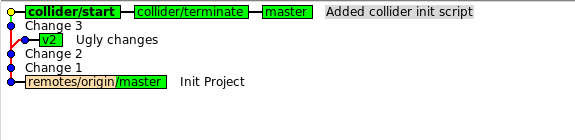
Как видно, мы в одной точке имеем 3 указателя (наши ветки), а изменения в коммите такие:
@@ -0,0 +1,11 @@
+#!/bin/sh
+
+
+USER=collider
+
+
+case $1 in
+ *)
+ echo Uknown Action: $1
+ ;;
+esac
Теперь, в каждой ветке напишем код, который, соответственно, будет запускать и уничтожать наш коллайдер. Последовательность действий приблизительно такая:
dev1(collider/start)$ vim collider.init.sh
dev1(collider/start)$ git commit -m "Added Collider Start Function" -a
[collider/start d229fa9] Added Collider Start Function
1 file changed, 9 insertions(+)
dev1(collider/start)$ git checkout collider/terminate
Switched to branch 'collider/terminate'
dev1(collider/terminate)$ vim collider.init.sh
dev1(collider/terminate)$ git commit -m "Added Collider Terminate Function" -a
[collider/terminate 4ea02f5] Added Collider Terminate Function
1 file changed, 9 insertions(+)
Сделанные изменения
collider/start
@@ -3,8 +3,17 @@
USER=collider
+do_start(){
+ echo -n "Starting collider..."
+ sleep 1s
+ echo "ok"
+ echo "The answer is 42. Please, come back again after 1 billion years."
+}
case $1 in
+ start)
+ do_start
+ ;;
*)
echo Uknown Action: $1
;;
collider/terminate
@@ -3,8 +3,17 @@
USER=collider
+do_terminate() {
+ echo -n "Safely terminating collider..."
+ sleep 1s
+ echo "oops :("
+
+}
case $1 in
+ terminate)
+ do_terminate
+ ;;
*)
echo Uknown Action: $1
;;
Как всегда, посмотрим в gitk --all что наделали:
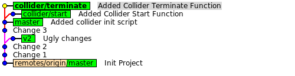
Разработка закончена и теперь надо отдать все изменения в master (там ведь старый коллайдер, который ничего не может). Объединение двух коммитов, как и говорилось выше — это merge. Но давайте подумаем, чем отличается ветка master от collider/start и как получить их объединение (сумму)? Например, можно взять общие коммиты этих веток, затем прибавить коммиты, относящиеся только к master, а затем прибавить коммиты, относящиеся только к collider/start. А что у нас? Общие коммиты — есть, только коммиты master — нет, только collider/start — есть. Т.е. объединение этих веток — это master + коммиты от collider/start. Но collider/start — это master + коммиты ветки collider/start! Тоже самое! Т.е. делать ничего не надо! Объединение веток — это и есть collider/start!
Ещё раз, только на буквах, надеюсь, что будет проще для восприятия:
master = C1 + C2 +C3
collider/start = master + C4 = C1 + C2 +C3 + C4
master + collider/start = Общие_коммиты(master, collider/start) + Только_у(master) + Только_у(collider/start) = (C1 + C2 +C3) + (NULL) + (C4) = C1 + C2 +C3 + C4
Когда одна ветка «лежит» на другой, то она уже как бы входит в эту, другую ветку, и результатом объединения будет вторая ветка. Мы просто перематываем историю вперёд от старых коммитов к новым. Вот эта перемотка (объединение, при котором делать ничего не надо) и получила название fast-forward.
Почему fast-forward — это хорошо?
Как быстро узнать, что fast-forward возможен? Для этого достаточно посмотреть в gitk на две ветки, которые нужно объединить и ответить на один вопрос: существует ли прямой путь от ветки А к B, если двигаться только вверх (от нижней к верхней). Если да — то будет fast-forward.
В теории понятно, пробуем на практике, забираем изменения в
master
:
dev1(collider/terminate)$ git checkout master
Switched to branch 'master'
Your branch is ahead of 'origin/master' by 4 commits.
dev1(master)$ git merge collider/start
Updating 0c3aa28..d229fa9
Fast-forward
collider.init.sh | 9 +++++++++
1 file changed, 9 insertions(+)
Результат (указатель просто передвинулся вперёд):
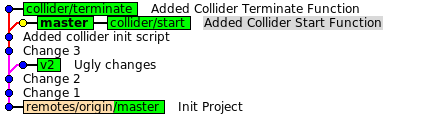
Объединение
Теперь забираем изменения из
collider/terminate
. Но, тот, кто дочитал до сюда (дочитал ведь, да?!) заметит, что прямого пути нет и так красиво мы уже не отделаемся. Попробуем git попросить fast-forward:
dev1(master)$ git merge --ff-only collider/terminate
fatal: Not possible to fast-forward, aborting.
Что и следовало ожидать. Делаем просто merge:
dev1(master)$ git merge collider/terminate
Auto-merging collider.init.sh
CONFLICT (content): Merge conflict in collider.init.sh
Automatic merge failed; fix conflicts and then commit the result.
Я даже рад, что у нас возник конфликт. Обычно, в этом момент некоторые теряются, лезут гуглить и спрашивают, что делать.
Для начала:
Конфликт возникает при попытке объединить два и более коммита, в которых в одной и той же строчке были сделаны изменения. И теперь git не знает что делать: то ли взять первый вариант, то ли второй, то ли старый оставить, то ли всё убрать.
Как всегда, две самые нужные команды нам спешат помочь:
dev1(master)$ git status
no changes added to commit (use "git add" and/or "git commit -a")
dev1(master)$ gitk --all
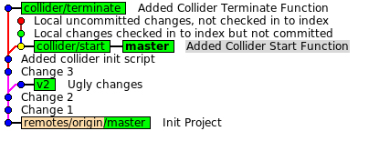
Мы находимся в
master
, туда же указывает
HEAD
, туда же и добавляются наши коммиты.
Файл выглядит так:
#!/bin/sh
USER=collider
<<<<<<< HEAD
do_start(){
echo -n "Starting collider..."
sleep 1s
echo "ok"
echo "The answer is 42. Please, come back again after 1 billion years."
}
case $1 in
start)
do_start
=======
do_terminate() {
echo -n "Safely terminating collider..."
sleep 1s
echo "oops :("
}
case $1 in
terminate)
do_terminate
>>>>>>> collider/terminate
;;
*)
echo Uknown Action: $1
;;
esac
Нам нужны оба варианта, но объединять вручную не хотелось бы, правда? Здесь то нам и помогут всякие merge-тулы.
Самый простой способ решить конфликт — это вызвать команду
git mergetool
. Почему-то не все знают про такую команду.
Она делает примерно следующие:
Пробуем:
dev1(master)$ git mergetool
merge tool candidates: opendiff kdiff3 tkdiff xxdiff meld tortoisemerge gvimdiff diffuse ecmerge p4merge araxis bc3 emerge vimdiff
Merging:
collider.init.sh
Normal merge conflict for 'collider.init.sh':
{local}: modified file
{remote}: modified file
Hit return to start merge resolution tool (kdiff3):
Из-за того что изменения были в одних и тех же местах конфликтов получилось много. Поэтому, я брал везде первый вариант, а второй копировал сразу после первого, но с gui это сделать довольно просто. Вот результат — вверху варианты файла, внизу — объединение (простите за качество):
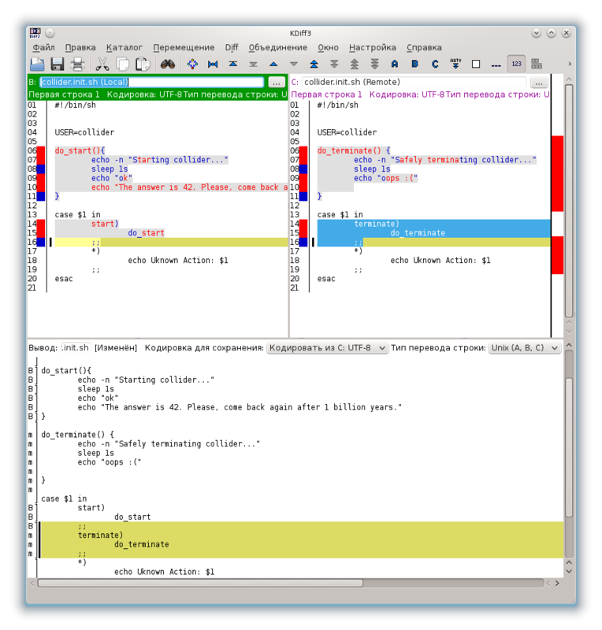
Сохраняем результат, закрываем окно, коммитим, смотрим результат:
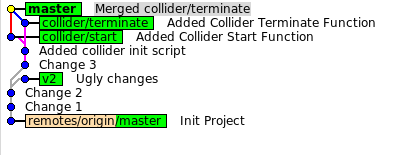
Мы создали новый коммит, который является объединением двух других. Fast-forward не произошёл, потому, что не было прямого пути для этого, история стала выглядеть чуть-чуть запутаннее. Иногда, merge действительно нужен, но излишне запутанная история тоже ни к чему.
Вот пример реального проекта:
Конечно, такое никуда не годится! «Но разработка идёт параллельно и никакого fast-forward не будет» скажете вы? Выход есть!
Перестройка
Что же делать, чтобы история оставалась красивой и прямой? Можно взять нашу ветку и перестроить её на другую ветку! Т.е. указать ветке новое начало и воспроизвести все коммиты один за одним. Этот процесс и называется rebase. Наши коммиты станут продолжением той ветки, на которую мы их перестроим. Тогда история будет простой и линейной. И можно будет сделать fast-forward.
Другими словами: мы повторяем историю изменений с одной ветки на другой, как будто бы мы действительно брали другую ветку и заново проделывали эти же самые изменения.
Для начала отменим последние изменения. Проще всего вернуть указатель master назад, на предыдущее состояние. Создавая merge-commit, мы передвинули именно master, поэтому именно его нужно вернуть назад, желательно (а в отдельных случаях важно) на тот же самый commit, где он был.
Как результат, наш merge-commit останется без какого-либо указателя и не будет принадлежать ни к одной ветке.
Используя gitk или консоль перемещаем наш указатель. Поскольку, ветка collider/start уже указывает на наш коммит, нам не нужно искать его id, а мы можем использовать имя ветки (это будет одно и тоже):
dev1(master)$ git reset --hard collider/start
HEAD is now at d229fa9 Added Collider Start Function
Что случилось с merge-commit?
Когда с коммита или с нескольких коммитов пропадает указатель (ветка), то коммит остаётся сам по себе. Git про него забывает, не показывает его в логах, в ветках и т.д. Но физически, коммит никуда не пропал. Он живёт себе в репозитории как невостребованная ячейка памяти без указателя и ждёт своего часа, когда git garbage collector её почистит.
Иногда бывает нужно вернуть коммит, который по ошибке был удалён. На помощь придёт
git reflog
. Он покажет всю историю, по каким коммитам вы ходили (как передвигался указатель
HEAD
). Используя вывод, можно найти id пропавшего коммита, сделать его checkout или создать на коммит указатель (ветку или тэг).
Выглядит это примерно так (история короткая, поместилась вся):
d229fa9 HEAD@{0}: reset: moving to collider/start
80b77c3 HEAD@{1}: commit (merge): Merged collider/terminate
d229fa9 HEAD@{2}: merge collider/start: Fast-forward
0c3aa28 HEAD@{3}: checkout: moving from collider/terminate to master
4ea02f5 HEAD@{4}: commit: Added Collider Terminate Function
0c3aa28 HEAD@{5}: checkout: moving from collider/start to collider/terminate
d229fa9 HEAD@{6}: commit: Added Collider Start Function
0c3aa28 HEAD@{7}: checkout: moving from collider/launch to collider/start
0c3aa28 HEAD@{8}: checkout: moving from collider/terminate to collider/launch
0c3aa28 HEAD@{9}: checkout: moving from collider/stop to collider/terminate
0c3aa28 HEAD@{10}: checkout: moving from collider/start to collider/stop
0c3aa28 HEAD@{11}: checkout: moving from master to collider/start
0c3aa28 HEAD@{12}: commit: Added collider init script
41f0540 HEAD@{13}: checkout: moving from v2 to master
75607a1 HEAD@{14}: commit: Ugly changes
55280dc HEAD@{15}: checkout: moving from master to v2
41f0540 HEAD@{16}: commit: Change 3
55280dc HEAD@{17}: commit: Change 2
598a03a HEAD@{18}: commit: Change 1
d80e5f1 HEAD@{19}: commit (initial): Init Project
Посмотрим, что получилось:
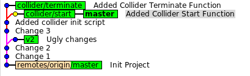
Для того, чтобы перестроить одну ветку на другую, нужно найти их общее начало, потом взять коммиты перестраиваемой ветки и, в таком же порядке, применить их на основную (base) ветку. Очень наглядная картинка (feature перестраивается на master):
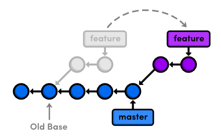
Важное замечание: после «перестройки» это уже будут новые коммиты. А старые никуда не пропали и не сдвинулись.
Для самопроверки и понимания: можно было бы вообще не отменять merge-commit. А взять ветку collider/terminate и перестроить на collider/start.
Тогда ветка collider/terminate была бы продолжением collider/start, а master с merge-commit остался бы в стороне. В конце, когда работа была бы готова, master просто переустанавливается на нужный коммит (git checkout master && git reset --hard collider/terminate). Смысл тот же, просто другой порядок действий. Git очень гибок — как хочу, так и кручу.
В теории разобрались, пробуем на практике. Переключаемся в collider/terminate и перестраиваем на тот коммит, куда указывает master (или collider/start, кому как удобнее). Команда дословно «взять текущую ветку и перестроить её на указанный коммит или ветку»:
dev1(master)$ git checkout collider/terminate
Switched to branch 'collider/terminate'
dev1(collider/terminate)$ git rebase -i master
Откроется редактор в котором будет приблизительно следующее:
pick 4ea02f5 Added Collider Terminate Function
Если коротко: то в процессе перестройки мы можем изменять комментарии к коммитам, редактировать сами коммиты, объединять их или вовсе пропускать. Т.е. можно переписать историю ветки до неузнаваемости. На данном этапе нам это не нужно, просто закрываем редактор и продолжаем. Как и в прошлый раз, конфликтов нам не избежать:
error: could not apply 4ea02f5... Added Collider Terminate Function
When you have resolved this problem run "git rebase --continue".
If you would prefer to skip this patch, instead run "git rebase --skip".
To check out the original branch and stop rebasing run "git rebase --abort".
Could not apply 4ea02f5... Added Collider Terminate Function
dev1((no branch))$ git status
no changes added to commit (use "git add" and/or "git commit -a")
Решаем конфликты с помощью
git mergetool
и продолжаем «перестройку» —
git rebase --continue
. Git в интерактивном режиме даёт нам возможность изменить и комментарий.
Результат:
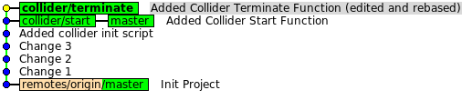
Теперь уже не сложно обновить master и удалить всё ненужное:
dev1(collider/terminate)$ git checkout master
Switched to branch 'master'
Your branch is ahead of 'origin/master' by 5 commits.
dev1(master)$ git merge collider/terminate
Updating d229fa9..6661c2e
Fast-forward
collider.init.sh | 11 +++++++++++
1 file changed, 11 insertions(+)
dev1(master)$ git branch -d collider/start
Deleted branch collider/start (was d229fa9).
dev1(master)$ git branch -d collider/terminate
Deleted branch collider/terminate (was 6661c2e).
На данном этапе мы удаляли, редактировали, объединяли правки, а на выходе получили красивую линейную историю изменений:
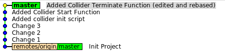
Перерыв
Довольно много информации уже поступило, поэтому нужно остановиться и обдумать всё. На примерах мы познакомились со следующими возможностями git:
Дальше примеры пойдут по сложнее. Я буду использовать простой скрипт, который будет в файл дописывать случайные строки.
На данном этапе нам не важно, какое содержимое, но было бы очень неплохо иметь много различных коммитов, а не один. Для наглядности.
Скрипт добавляет случайную строчку к файлу и делает git commit. Это повторяется несколько раз:
dev1(master)$ for i in `seq 1 2`; do STR=`pwgen -C 20 -B 1`; echo $STR >> trash.txt; git commit -m "Added $STR" trash.txt; done
[master e64499d] Added rooreoyoivoobiangeix
1 file changed, 1 insertion(+)
[master a3ae806] Added eisahtaexookaifadoow
1 file changed, 1 insertion(+)
Передача и приём изменений
Настало время научиться работать с удалёнными репозиториями. В общих чертах, для работы нам нужно уметь:
Вот список основных команд, которые будут использоваться:
git remote
Как отмечалось выше,
origin
— это имя репозитория по умолчанию. Имена нужны, т.к. репозиториев может быть несколько и их нужно как-то различать. Например, у меня была копия репозитория на флешке и я добавил репозиторий
flash
. Таким образом я мог работать с двумя репозиториями одновременно:
origin
и
flash
.
Имя репозитория используется как префикс к имени ветки, чтоб можно было отличать свою ветку от чужой, например master и origin/master
Небольшой трюк
master в репозитории origin будет показываться как origin/master. Но как уже известно, можно дать ветке имя содержащее '/'.
Т.е. можно создать ветку с именем "origin\/master", которая будет являться просто обычной веткой и ничего общего с удалённой веткой master иметь не будет. Git послушный, сделает всё, что вы попросите. Конечно, не стоит так делать.
В справке по git remote достаточно хорошо всё описано. Как и ожидается, там есть команды: add, rm, rename, show.
show
покажет основные настройки репозитория:
dev1(master)$ git remote show origin
* remote origin
Fetch URL: /home/sirex/proj/git-habr/origin
Push URL: /home/sirex/proj/git-habr/origin
HEAD branch: master
Remote branch:
master tracked
Local branch configured for 'git pull':
master merges with remote master
Local ref configured for 'git push':
master pushes to master (fast-forwardable)
Чтобы добавить существующий репозиторий используем add:
git remote add backup_repo ssh://user@myserver:backups/myrepo.git
git push backup_repo master
git fetch
Команда говорит сама за себя: получить изменения.
Стоит отметить, что локально никаких изменений не будет. Git не тронет рабочую копию, не тронет ветки и т.д.
Будут скачены новые коммиты, обновлены только удалённые (remote) ветки и тэги. Это полезно потому, что перед обновлением своего репозитория можно посмотреть все изменения, которые «пришли» к вам.
Ниже есть описание команды push, но сейчас нам нужно передать изменения в origin, чтобы наглядно показать как работает fetch:
dev1(master)$ git push origin master
Counting objects: 29, done.
Delta compression using up to 4 threads.
Compressing objects: 100% (21/21), done.
Writing objects: 100% (27/27), 2.44 KiB, done.
Total 27 (delta 6), reused 0 (delta 0)
Unpacking objects: 100% (27/27), done.
To /home/sirex/proj/git-habr/origin
d80e5f1..a3ae806 master -> master
Теперь от имени dev2 посмотрим, что есть и получим все изменения:
dev2(master)$ git log
commit d80e5f1746856a7228cc27072fa71f1c087d649a
Author: jsirex
Date: Thu Apr 4 04:21:07 2013 +0300
Init Project
dev2(master)$ git fetch origin
remote: Counting objects: 29, done.
remote: Compressing objects: 100% (21/21), done.
remote: Total 27 (delta 6), reused 0 (delta 0)
Unpacking objects: 100% (27/27), done.
From /home/sirex/proj/git-habr/origin
d80e5f1..a3ae806 master -> origin/master
Выглядит это так:
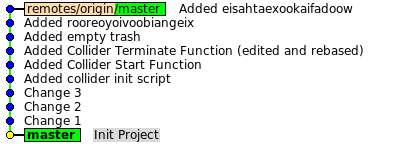
Обратите внимание, что мы находимся в
master
.
Что можно сделать:
git checkout origin/master
— переключиться на удалённый master, чтобы «пощупать» его. При этом нельзя эту ветку редактировать, но можно создать свою локальную и работать с ней.
git merge origin/master
— объединить новые изменения со своими. Т.к. у нас локальных изменений не было, то merge превратится в fast-forward:
dev2(master)$ git merge origin/master
Updating d80e5f1..a3ae806
Fast-forward
README.md | 2 ++
collider.init.sh | 31 +++++++++++++++++++++++++++++++
trash.txt | 2 ++
3 files changed, 35 insertions(+)
create mode 100755 collider.init.sh
create mode 100644 trash.txt
Если в origin появятся новые ветки, само собой fetch их тоже скачает. Также можно попросить fetch обновить только конкретную ветку, а не все.
Важный момент
: когда кто-то удаляет ветку из origin, у вас локально всё равно остаётся запись о ней. Например, вы продолжаете видеть
origin/deleted/branch
, хотя её уже нет. Чтобы эти записи удалить используйте
git fetch origin --prune
.
git pull
git pull
тоже самое что и git fetch + git merge. Разумеется, что изменения будут объединяться с соответствующими ветками:
master
с
origin/master
,
feature
с
origin/feature
. Ветки объединяются не по имени, как кто-то может подумать, а за счёт
upstream tracking branch
. Когда мы делаем checkout любой ветки для работы, git делает приблизительно следующее:
В файле
.git/config
можно это увидеть:
[branch "master"]
remote = origin
merge = refs/heads/master
В 95% случаев, вам не нужно менять это поведение.
Если были локальные изменения, то git pull автоматически объединит их с удалённой веткой и будет merge-commit, а не fast-forward. Пока мы что-то разрабатывали код устарел и неплохо было бы сначала обновиться, применить все свои изменения уже поверх нового кода и только потом отдать результат. Или пока продолжить локально. И чтоб история не смешивалась. Вот это и помогает делать rebase.
Чтобы git по умолчанию использовал
rebase
, а не
merge
, можно его попросить:
git config branch.<branch_name>.rebase true
git push
git push origin
— передать изменения. При этом все отслеживаемые (tracking) ветки будут переданы. Чтобы передать определённую ветку, нужно явно указать имя:
git push origin branch_name
.
На данном этапе могут возникнуть вопросы:
На все вопросы может ответить расширенный вариант использования команды:
git push origin <локальный_коммит_или_указатель>:<имя_ветки_в_origin>
Примеры:
git push origin d80e5f1:old_master
git push origin my_local_feature:new_feature/with_nice_name
git push origin :dead_feature
Важно: когда вы обновляете ветку, предполагается, что вы сначала забрали все последние изменения и только потом пытаетесь передать всё обратно. Git предполагает, что история останется линейной, ваши изменения продолжают текущие (fast-forward). В противном случае вы получите:rejected! non fast-forward push!.
Иногда, когда вы точно знаете, что делаете, это необходимо. Обойти это можно так:
git push origin master --force
Включаемся в проект
К этому моменту уже более-менее понятно, как работает push, pull. Более смутно представляется в чём разница между merge и rebase. Совсем непонятно зачем это нужно и как применять.
Когда кого-нибудь спрашивают:
— Зачем нужна система контроля версий?
Чаще всего в ответе можно услышать:
— Эта система помогает хранить все изменения в проекте, чтобы ничего не потерялось и всегда можно было «откатиться назад».
А теперь задайте себе вопрос: «как часто приходится откатываться назад?» Часто ли вам нужно хранить больше, чем последнее состояние проекта? Честный ответ будет: «очень редко». Я этот вопрос поднимаю, чтобы выделить гораздо более важную роль системы контроля версий в проекте:
Система контроля версий позволяет вести совместную работу над проектом более, чем одному разработчику.
То, на сколько вам удобно работать с проектом совместно с другими разработчиками и то, на сколько система контроля версий вам помогает в этом — самое важное.
Используете %VCS_NAME%? Удобно? Не ограничивает процесс разработки и легко адаптируется под требования? Быстро? Значит эта %VCS_NAME% подходит для вашего проекта лучше всего. Пожалуй, вам не нужно ничего менять.
Типичные сценарии при работе над проектом
Теперь поговорим о типичных сценариях работы над проектом с точки зрения кода. А это:
Чтобы добиться такого процесса, нужно чётко определиться где и что будет хранится. Т.к. ветки легковесные (т.е. не тратят ресурсов, места и т.д.) под все задачи можно создать отдельные ветки. Это является хорошей практикой. Такой подход даёт возможность легко оперировать наборами изменений, включать их в различные ветки или полностью исключать неудачные варианты.
В master обычно хранится последняя выпущенная версия и он обновляется только от релиза к релизу. Не будет лишним сделать и tag с указанием версии, т.к. master может обновиться.
Нам понадобится ещё одна ветка для основной разработки, та самая в которую будет всё сливаться и которая будет продолжением
master
. Её будут тестировать и по готовности, во время релиза, все изменения будут сливать в
master
. Назовём эту ветку
dev
.
Если нам нужно выпустить hotfix, мы можем вернуться к состоянию
master
или к определённому тэгу, создать там ветку
hotfix/version
и начать работу по исправлению критических изменений. Это не затрагивает проект и текущую разработку.
Для разработки фич удобно будет использовать ветки
feature/<feature_name>
. Начинать эту ветку лучше с самых последних изменений и периодически «подтягивать» изменения из
dev
к себе. Чтобы сохранить историю простой и линейной, ветку лучше перестраивать на
dev
(
git rebase dev
).
Исправление мелких багов может идти напрямую в
dev
. Но даже для мелких багов или изменений рекомендуется создавать локально временные ветки. Их не надо отправлять в глобальный репозиторий. Это только ваши временные ветки. Такой подход даст много возможностей:
Исправление багов
Создадим ветку
dev
и рассмотрим типичный сценарий исправления багов.
dev1(master)$ git status
nothing to commit (working directory clean)
dev1(master)$ git checkout -b dev
Switched to a new branch 'dev'
dev1(dev)$ git push origin dev
Total 0 (delta 0), reused 0 (delta 0)
To /home/sirex/proj/git-habr/origin
* [new branch] dev -> dev
И второй разработчик «забирает» новую ветку к себе:
dev2(master)$ git pull
From /home/sirex/proj/git-habr/origin
* [new branch] dev -> origin/dev
Already up-to-date.
Пусть 2 разработчика ведут работу каждый над своим багом и делают несколько коммитов (пусть вас не смущает, что я таким некрасивым способом генерирую множество случайных коммитов):
dev1(dev)$ for i in `seq 1 10`; do STR=`pwgen -C 20 -B 1`; echo $STR >> trash.txt; git commit -m "Added $STR" trash.txt; done
[dev 0f019d0] Added ahvaisaigiegheweezee
1 file changed, 1 insertion(+)
[dev c715f87] Added eizohshochohseesauge
1 file changed, 1 insertion(+)
[dev 9b9672c] Added aitaquuerahshiqueeph
1 file changed, 1 insertion(+)
[dev 43dad98] Added zaesooneighufooshiph
1 file changed, 1 insertion(+)
[dev 9da2de3] Added aebaevohneejaefochoo
1 file changed, 1 insertion(+)
[dev e93f93e] Added rohmohpheinugogaigoo
1 file changed, 1 insertion(+)
[dev 54ba433] Added giehaokeequokeichaip
1 file changed, 1 insertion(+)
[dev 05f72db] Added hacohphaiquoomohxahb
1 file changed, 1 insertion(+)
[dev 8c03e0d] Added eejucihaewuosoonguek
1 file changed, 1 insertion(+)
[dev cf21377] Added aecahjaokeiphieriequ
1 file changed, 1 insertion(+)
dev2(master)$ for i in `seq 1 6`; do STR=`pwgen -C 20 -B 1`; echo $STR >> trash.txt; git commit -m "Added $STR" trash.txt; done
[master 1781a2f] Added mafitahshohfaijahney
1 file changed, 1 insertion(+)
[master 7df3851] Added ucutepoquiquoophowah
1 file changed, 1 insertion(+)
[master 75e7b2b] Added aomahcaashooneefoavo
1 file changed, 1 insertion(+)
[master d4dea7e] Added iexaephiecaivezohwoo
1 file changed, 1 insertion(+)
[master 1459fdb] Added quiegheemoighaethaex
1 file changed, 1 insertion(+)
[master 1a949e9] Added evipheichaicheesahme
1 file changed, 1 insertion(+)
Когда работа закончена, передаём изменения в репозиторий. Dev1:
dev1(dev)$ git push origin dev
Counting objects: 32, done.
Delta compression using up to 4 threads.
Compressing objects: 100% (30/30), done.
Writing objects: 100% (30/30), 2.41 KiB, done.
Total 30 (delta 19), reused 0 (delta 0)
Unpacking objects: 100% (30/30), done.
To /home/sirex/proj/git-habr/origin
a3ae806..cf21377 dev -> dev
Второй разработчик:
dev2(master)$ git push origin dev
error: src refspec dev does not match any.
error: failed to push some refs to '/home/sirex/proj/git-habr/origin'
Что произошло? Во-первых мы хоть и сделали pull, но забыли переключиться на dev. А работать стали в master.
Когда работаете с git старайтесь «командовать» как можно конкретнее.
Я хотел передать изменения именно в
dev
. Если бы вместо
git push origin dev
я использовал просто
git push
,
то git бы сделал то, что он должен был бы сделать — передал изменения из нашего
master
в
origin/master
. Такую ситуацию можно исправить, но сложнее. Намного проще исправлять всё локально.
Как и говорилось выше, ничего страшного, всё поправимо. Как обычно, посмотрим что наделали gitk --all:
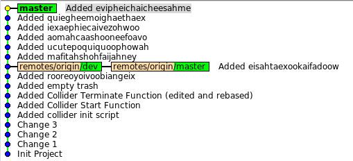
У нас вперёд «поехал»
master
, а должен был «поехать»
dev
. Вариантов исправить ситуацию несколько.
Вот можно, например, так:
На первый взгляд, кажется, что здесь много действий и всё как-то сложно. Но, если разобраться, то описание того, что нужно сделать намного больше, чем самой работы. И самое главное, мы уже так делали выше. Приступим к практике:
dev2(master)$ git checkout dev
Branch dev set up to track remote branch dev from origin.
Switched to a new branch 'dev'
dev2(dev)$ git merge master
Updating a3ae806..1a949e9
Fast-forward
trash.txt | 6 ++++++
1 file changed, 6 insertions(+)
dev2(dev)$ git checkout master
Switched to branch 'master'
Your branch is ahead of 'origin/master' by 6 commits.
dev2(master)$ git reset --hard origin/master
HEAD is now at a3ae806 Added eisahtaexookaifadoow
dev2(master)$ git checkout dev
Switched to branch 'dev'
Your branch is ahead of 'origin/dev' by 6 commits.
Посмотрим на результат:
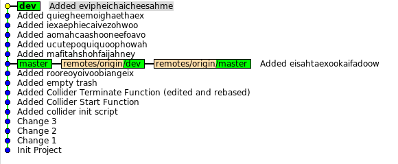
Теперь, всё как положено: наши изменения в
dev
и готовы быть переданы в origin.
Передаём:
dev2(dev)$ git push origin dev
To /home/sirex/proj/git-habr/origin
! [rejected] dev -> dev (non-fast-forward)
error: failed to push some refs to '/home/sirex/proj/git-habr/origin'
hint: Updates were rejected because the tip of your current branch is behind
hint: its remote counterpart. Merge the remote changes (e.g. 'git pull')
hint: before pushing again.
hint: See the 'Note about fast-forwards' in 'git push --help' for details.
Передать не получилось, потому что кто-то другой (dev1) обновил репозиторий, передав свои изменения и мы просто «отстали». Нам нужно актуализировать своё состояние, сделав git pull или git fetch. Т.к. git pull сразу будет объединять ветки, я предпочитаю использовать git fetch, т.к. он даёт мне возможность осмотреться и принять решение позже:
dev2(dev)$ git fetch origin
remote: Counting objects: 32, done.
remote: Compressing objects: 100% (30/30), done.
remote: Total 30 (delta 19), reused 0 (delta 0)
Unpacking objects: 100% (30/30), done.
From /home/sirex/proj/git-habr/origin
a3ae806..cf21377 dev -> origin/dev
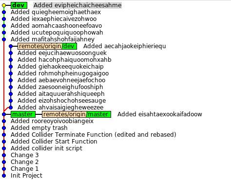
Есть несколько вариантов, чтобы передать наши изменения:
Наиболее привлекательным является 3ий вариант, который мы и попробуем, причём в интерактивном режиме:
dev2(dev)$ git rebase -i origin/dev
Нам откроется редактор и даст возможность исправить нашу историю, например, поменять порядок коммитов или объединить несколько. Об этом писалось выше. Я оставлю как есть:
pick 1781a2f Added mafitahshohfaijahney
pick 7df3851 Added ucutepoquiquoophowah
pick 75e7b2b Added aomahcaashooneefoavo
pick d4dea7e Added iexaephiecaivezohwoo
pick 1459fdb Added quiegheemoighaethaex
pick 1a949e9 Added evipheichaicheesahme
В процессе перестройки возникнут конфликты. Решаем их через git mergetool (или как вам удобнее) и продолжаем перестройку git rebase --continue
Т.к. у меня всё время дописываются строчки в один файл, конфликтов не избежать, но на практике в проектах, когда работа над разными частями проекта распределена, конфликтов вообще не будет. Или они будут довольно редкими.
Отсюда можно вывести
пару полезных правил
:
После того как все конфликты решены, история будет линейной и логичной. Для наглядности я поменял комментарии (интерактивный rebase даёт эту возможность):
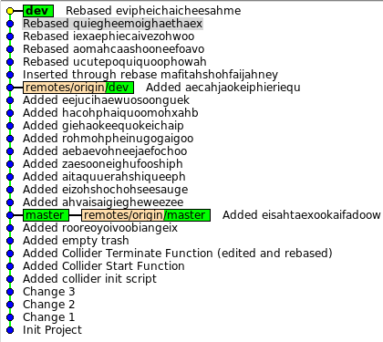
Теперь наша ветка продолжает origin/dev и мы можешь отдать наши изменения: актуальные, адаптированные под новые коммиты:
dev2(dev)$ git push origin dev
Counting objects: 20, done.
Delta compression using up to 4 threads.
Compressing objects: 100% (18/18), done.
Writing objects: 100% (18/18), 1.67 KiB, done.
Total 18 (delta 11), reused 0 (delta 0)
Unpacking objects: 100% (18/18), done.
To /home/sirex/proj/git-habr/origin
cf21377..8212c4b dev -> dev
Далее история повторяется. Для удобства или в случае работы над несколькими багами, как говорилось выше, удобно перед началом работы создать отдельные ветки из
dev
или
origin/dev
.
Короткий итог: обычное исправление багов может быть осуществлено по следующему простому алгоритму:
Feature branch
Бывает так, что нужно сделать какой-то большой кусок работы, который не должен попадать в основную версию пока не будет закончен. Над такими ветками могут работать несколько разработчиков. Очень серьёзный и объёмный баг может рассматриваться с точки зрения процесса работы в git как фича — отдельная ветка, над которой работают несколько человек. Сам же процесс точно такой же как и при обычном исправлении багов. Только работа идёт не с
dev
, а с
feature/name
веткой.
Вообще, такие ветки могут быть коротко-живущими (1-2 неделя) и долго-живущими (месяц и более). Разумеется, чем дольше живёт ветка, тем чаще её нужно обновлять, «подтягивая» в неё изменения из основной ветки. Чем больше ветка, тем, вероятно, больше будет накладных расходов по её сопровождению.
Начнём с коротко-живущих (short-live feature branches)
Обычно ветка создаётся с самого последнего кода, в нашем случае с ветки dev:
dev1(dev)$ git fetch origin
remote: Counting objects: 20, done.
remote: Compressing objects: 100% (18/18), done.
remote: Total 18 (delta 11), reused 0 (delta 0)
Unpacking objects: 100% (18/18), done.
From /home/sirex/proj/git-habr/origin
cf21377..8212c4b dev -> origin/dev
dev1(dev)$ git branch --no-track feature/feature1 origin/dev
dev1(dev)$ git push origin feature/feature1
Total 0 (delta 0), reused 0 (delta 0)
To /home/sirex/proj/git-habr/origin
* [new branch] feature/feature1 -> feature/feature1
Теперь работу на feature1 можно вести в ветке feature/feature1. Спустя некоторое время в нашей ветке будет много коммитов, и работа над feature1 будет закончена. При этом в dev тоже будет много изменений. И наша задача отдать наши изменения в dev.
Выглядеть это будет приблизительно так:
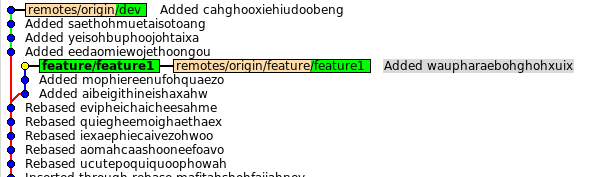
Ситуация напоминает предыдущую: две ветки, одну нужно объединить с другой и передать в репозиторий. Единственное отличие, это две публичные (удалённые) ветки, а не локальные. Это требует небольшой коммуникации. Когда работа закончена, один разработчик должен предупредить другого, что он собирается «слить» изменения в
dev
и, например, удалить ветку. Таким образом передавать в эту ветку что-либо будет бессмысленно.
А дальше алгоритм почти такой как и был:
git fetch origin
git rebase -i origin/dev
git checkout dev
git merge feature/feature1
Картинка, feature1 стала частью dev, то что на и нужно было:
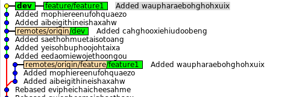
Делаем push и чистим за собой ненужное:
dev1(dev)$ git push origin dev
Counting objects: 11, done.
Delta compression using up to 4 threads.
Compressing objects: 100% (9/9), done.
Writing objects: 100% (9/9), 878 bytes, done.
Total 9 (delta 6), reused 0 (delta 0)
Unpacking objects: 100% (9/9), done.
To /home/sirex/proj/git-habr/origin
3272f59..e514869 dev -> dev
dev1(dev)$ git push origin :feature/feature1
To /home/sirex/proj/git-habr/origin
- [deleted] feature/feature1
dev1(dev)$ git branch -d feature/feature1
Deleted branch feature/feature1 (was e514869).
Долго-живущие ветки (long-live feature branches)
Сложность долго-живущих веток в их поддержке и актуализации. Если делать всё как описано выше то, вероятно быть беде: время идёт, основная ветка меняется, проект меняется, а ваша фича основана на очень старом варианте. Когда настанет время выпустить фичу, она будет настолько выбиваться из проекта, что объединение может быть очень тяжёлым или, даже, невозможным. Именно поэтому, ветку нужно обновлять. Раз dev уходит вперёд, то мы будем просто время от времени перестраивать нашу ветку на dev.
Всё бы хорошо, но только нельзя просто так взять и перестроить публичную ветку: ветка после ребэйза — это уже новый набор коммитов, совершенно другая история. Она не продолжает то, что уже было. Git не примет такие изменения: два разных пути, нет fast-forward'а. Чтобы переписать историю разработчикам нужно договориться.
Кто-то будет переписывать историю и принудительно выкладывать новый вариант, а в этот момент остальные не должны передавать свои изменения в текущую ветку, т.к. она будет перезаписана и всё пропадёт. Когда первый разработчик закончит, все остальные перенесут свои коммиты, которые они успеют сделать во время переписи уже на новую ветку.
Кто говорил, что нельзя ребэйзить публичные ветки?
Приступим к практике:
dev1(dev)$ git checkout -b feature/long
Switched to a new branch 'feature/long'
dev1(feature/long)$ git push origin dev
Everything up-to-date
dev1(feature/long)$ генерируем_много_коммитов
dev1(feature/long)$ git push origin feature/long
Counting objects: 11, done.
Delta compression using up to 4 threads.
Compressing objects: 100% (9/9), done.
Writing objects: 100% (9/9), 807 bytes, done.
Total 9 (delta 6), reused 0 (delta 0)
Unpacking objects: 100% (9/9), done.
To /home/sirex/proj/git-habr/origin
* [new branch] feature/long -> feature/long
Второй разработчик подключается к работе всё стандартно:
dev2(dev)$ git pull
remote: Counting objects: 11, done.
remote: Compressing objects: 100% (9/9), done.
remote: Total 9 (delta 6), reused 0 (delta 0)
Unpacking objects: 100% (9/9), done.
From /home/sirex/proj/git-habr/origin
* [new branch] feature/long -> origin/feature/long
Already up-to-date.
dev2(dev)$ git checkout feature/long
Branch feature/long set up to track remote branch feature/long from origin.
Switched to a new branch 'feature/long'
dev2(feature/long)$ делаем много коммитов
dev2(feature/long)$ git pull --rebase feature/long
dev2(feature/long)$ git push origin feature/long
Counting objects: 11, done.
Delta compression using up to 4 threads.
Compressing objects: 100% (9/9), done.
Writing objects: 100% (9/9), 795 bytes, done.
Total 9 (delta 6), reused 0 (delta 0)
Unpacking objects: 100% (9/9), done.
To /home/sirex/proj/git-habr/origin
baf4c6b..ce9e58d feature/long -> feature/long
Добавим ещё несколько коммитов в основную ветку
dev
и история будет такая:
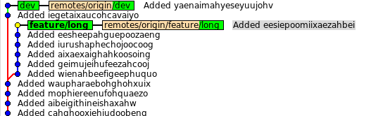
Настало время актуализировать feature/long, но при этом разработка должна продолжиться отдельно. Пусть перестраивать будет dev1. Тогда он предупреждает dev2 об этом и начинает:
dev1(feature/long)$ git fetch origin
dev1(feature/long)$ git rebase -i origin/dev
... решение конфликтов, если есть, и т.д.
В это время dev2 продолжает работать, но знает, что ему нельзя делать push, т.к. нужной ветки ещё нет (а текущая будет удалена).
Первый заканчивает rebase и история будет такой:
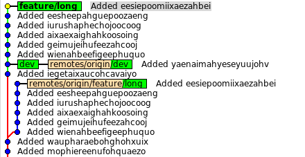
Ветка перестроена, а
origin/feature/long
остался там, где и был. Цели мы достигли, теперь нужно поделиться со всеми:
dev1(feature/long)$ git push origin feature/long
To /home/sirex/proj/git-habr/origin
! [rejected] feature/long -> feature/long (non-fast-forward)
error: failed to push some refs to '/home/sirex/proj/git-habr/origin'
hint: Updates were rejected because the tip of your current branch is behind
hint: its remote counterpart. Merge the remote changes (e.g. 'git pull')
hint: before pushing again.
hint: See the 'Note about fast-forwards' in 'git push --help' for details.
Git лишний раз напоминает, что что-то не так. Но теперь, мы точно знаем, что мы делаем, и знаем, что так надо:
dev1(feature/long)$ git push origin feature/long --force
Counting objects: 20, done.
Delta compression using up to 4 threads.
Compressing objects: 100% (18/18), done.
Writing objects: 100% (18/18), 1.58 KiB, done.
Total 18 (delta 12), reused 0 (delta 0)
Unpacking objects: 100% (18/18), done.
To /home/sirex/proj/git-habr/origin
+ ce9e58d...84c3001 feature/long -> feature/long (forced update)
Теперь можно работать дальше предупредив остальных об окончании работ.
Посмотрим, как эти изменения отразились на окружающих и на dev2 в частности:
dev2(feature/long)$ git fetch origin
remote: Counting objects: 20, done.
remote: Compressing objects: 100% (18/18), done.
remote: Total 18 (delta 12), reused 0 (delta 0)
Unpacking objects: 100% (18/18), done.
From /home/sirex/proj/git-habr/origin
+ ce9e58d...84c3001 feature/long -> origin/feature/long (forced update)
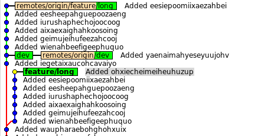
История разошлась, наши коммиты перестроены, кроме одного. Если бы коммитов вообще не было, т.е. разработчик dev2 читал бы хабр, пока первый работает, то достаточно было бы передвинуть указатель feature/long на origin/feature/long и продолжить работу. Но у нас есть один коммит, который надо добавить. Тут нам опять поможет rebase, вместе с ключом --onto:
git rebase --onto <на_какую_ветку_перестроить> <c_какого_коммита_или_ветки> <по_какой_коммит_или_имя_ветки>
Такой подход позволяет взять только часть (некоторую последовательность коммитов) для перестроения. Бывает полезно, когда нужно перенести несколько последних коммитов.
Вспомним также про запись
HEAD~1
. К указателю можно применить оператор ~N, чтобы указать на предыдущий N-ый коммит.
HEAD~1
— это предыдущий, а
HEAD~2
— это предпредыдущий.
HEAD~5
— 5 коммитов назад. Удобно, чтобы не запоминать id.
Посмотрим, как теперь нам перестроить только один коммит:
git rebase -i --onto origin/feature/long feature/long~1 feature/long
Разберём подробнее:
Если бы нам надо было перетянуть 4 коммита, то было бы
feature/long~4
.
dev2(feature/long)$ git rebase -i --onto origin/feature/long feature/long~1 feature/long
Successfully rebased and updated refs/heads/feature/long.
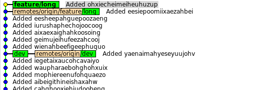
Осталось продолжить работу.
Есть ещё одна полезная команда, которая могла бы пригодиться и в этом случае, и во многих других — git cherry-pick.
Находясь в любом месте можно попросить git взять любой коммит и применить его в текущем месте. Нужный нам коммит можно было «утащить»:
git reset --hard origin/feature/long && git cherry-pick commit_id
Hotfixes
Hotfixы нужны, т.к. бывают очень критичные баги, которые нужно исправить как можно быстрее. При этом нельзя передать вместе с hotfix-ом последний код, т.к. он не оттестирован и на полное тестирование нет времени. Нужно только это исправление, максимально быстро и оттестированное. Чтобы это сделать, достаточно взять последний релиз, который был отправлен на продакшен. Это тот, где у вас остался
tag
или
master
. Тэги играют очень важную роль, помогая понять что именно было собрано и куда это попало.
Тэги делаются командой
git tag и тоже могут содержать '/' в своём имени.
Для выпуска hotfix-а нам нужно:
1. создать ветку hotfix из tag или master
2. сделать исправление (или cherry-pick конкретного коммита, вдруг уже где-то это исправили)
3. сделать тэг
4. выпустить билд
5. и возможно с помощью cherry-pick передать изменения в основную ветку, если его там не было. Чтоб не потерялось.
Превратим наш план в команды git:
dev2(feature/long)$ git checkout master
Switched to branch 'master'
dev2(master)$ git tag release/1.0
dev2(master)$ git checkout -b hotfix/1.0.x
Switched to a new branch 'hotfix/1.0.x'
dev2(hotfix/1.0.x)$ .. исправления и коммиты
dev2(hotfix/1.0.x)$ git push origin hotfix/1.0.x
Counting objects: 5, done.
Delta compression using up to 4 threads.
Compressing objects: 100% (3/3), done.
Writing objects: 100% (3/3), 302 bytes, done.
Total 3 (delta 1), reused 0 (delta 0)
Unpacking objects: 100% (3/3), done.
To /home/sirex/proj/git-habr/origin
* [new branch] hotfix/1.0.x -> hotfix/1.0.x
dev2(hotfix/1.0.x)$ git tag release/1.0.1
dev2(hotfix/1.0.x)$ git checkout dev
Switched to branch 'dev'
dev2(dev)$ git cherry-pick release/1.0.1
dev2(dev)$ git commit
[dev 9982f7b] Added rahqueiraiheinathiav
1 file changed, 1 insertion(+)
dev2(dev)$ git push origin dev
Counting objects: 5, done.
Delta compression using up to 4 threads.
Compressing objects: 100% (3/3), done.
Writing objects: 100% (3/3), 328 bytes, done.
Total 3 (delta 2), reused 0 (delta 0)
Unpacking objects: 100% (3/3), done.
To /home/sirex/proj/git-habr/origin
b21f8a5..9982f7b dev -> dev
Быстро и просто, не так ли? Если у вас было 2 коммита в hotfixes, возможно проще будет сделать 2 раза cherry-pick в dev. Но если их было много, можно опять воспользоваться командой git rebase --into ... и перестроить целую цепочку коммитов.
Всякие полезности
Git позволяет настраивать aliasы для различных команд. Это бывает очень удобно и сокращает время набора команд. Приводить здесь примеры не буду, в Интернете их полно, просто поищите.
Перед тем, как отдавать свои изменения их можно перестроить на самих себя, чтобы привести историю в порядок.
Например, в логах может быть такое:
9982f7b Finally make test works
b21f8a5 Fixed typo in Test
3eabaab Fixed typo in Test
e514869 Added Test for Foo
b4439a2 Implemented Method for Foo
250adb1 Added class Foo
Перестроим сами себя, но начиная с 6 коммитов назад:
dev2(dev)$ git rebase -i dev~6
dev2(dev)$ git rebase -i origin/dev
Теперь в интерактивном режиме можно объединить (squash) первые два коммита в один и последние четыре. Тогда история будет выглядеть так:
0f019d0 Added Test for class Foo
a3ae806 Implemented class Foo
Такое намного приятнее передавать в общим репозиторий.
Обязательно посмотрите, что умеет git config и git config --global. Перед тем, как начнёте работать с реальным проектом, неплохо было бы настроить свой username и email:
git config --global user.name sirex
git config --global user.email jsirex@gmail.com
На одном проекте у нас велась параллельная разработка очень многих фич. Они все разрабатывались в отдельных ветках, но тестировать их нужно было вместе. При этом на момент выпуска билда для тестирования не было понятно, готовы фичи или нет: могли поменяться требования или найтись серьёзные баги. И стал вопрос: как продолжить работу над всеми фичами не объединяя их в принципе никогда, но объединяя всё перед релизом? Противоречие? Git красиво помогает решить эту проблему и вот как:
Выводы
Причемания и апдейты
gcc рекомендовал посмотреть на Git Extensions.
borNfree подсказал ещё один GUI клиент Source Tree.
zloylos поделился ссылкой на визуализатор для git
olancheg предложил посмотреть на ещё один туториал для новичков.
PS. Что тут обычно пишут, когда первый пост на хабре? Прошу не судить строго, писал как мог.